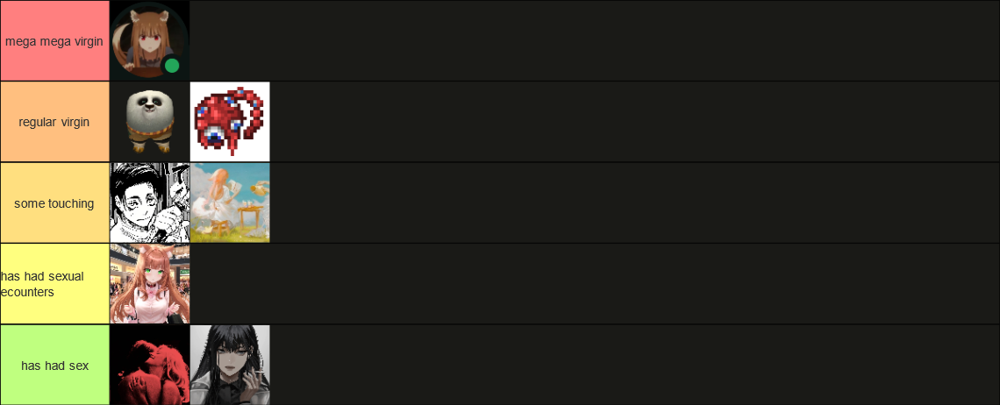
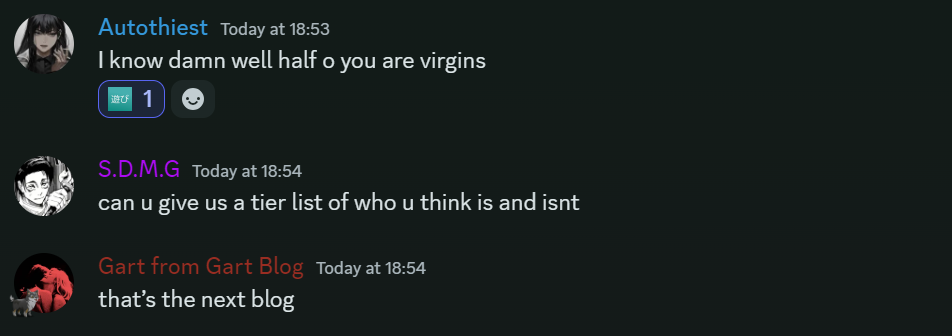
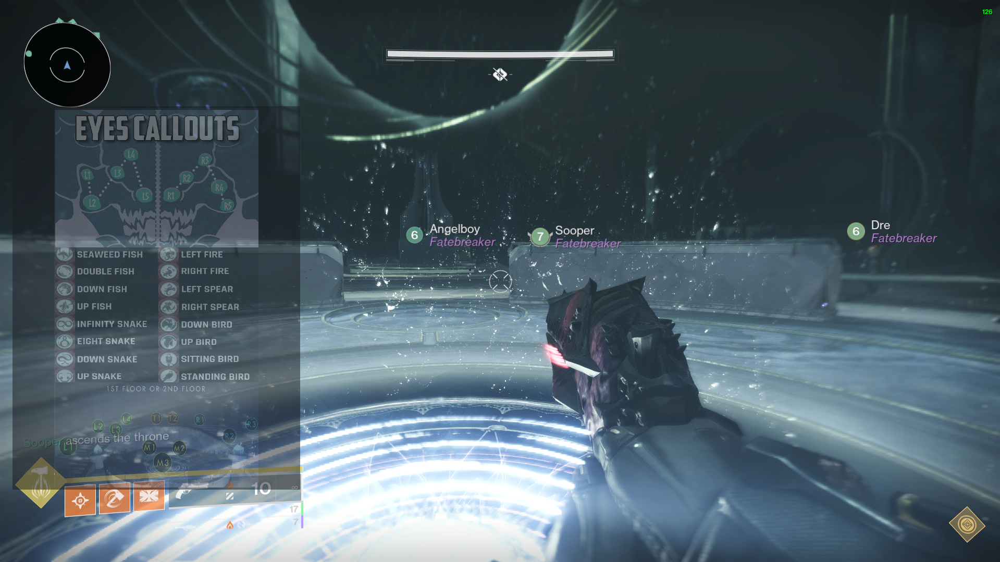

📌 my name gart
september 24th 2024
hello, my name is roshan 👋, but usually found online under the alias of gart 🎭🎭,
and this is my blog 📑. this introductory post will always be at the top 🔝, however,
future posts will feature in reverse chronological order 🔁so that the newest is
always at the top. i have recently started an undergraduate degree in computer
science 🤓💻, and have studied it since gcse level. for the last ten years 😖, i have
been playing destiny 🤢, and i have found it impossible to stay normal about it,
and i have an increasingly difficult time not sharing elitist takes about it ✅✅.
the virgin tierlist
october 12th 2024

click on this image!
×

this is the virgin tierlist
this is the virgin tierlist. as you can see, i have created five seperate tiers, these being: mega mega virgin, regular
virgin, some touching, has had sexual encounters, or has had sex.

the reason the tierlist exists
the reason why i have created this tierlist is because i have been thinking about the concept of virginity a lot recently. i have been thinking about how it is a social construct, and how it is a
concept that is used to shame people. i have been thinking about how it is a concept that is used to control people and that they are not good enough. well, look, i'm here to say that you should feel that way as a virgin.
now, to explain my reasoning behind the placement on tiers.
- savir savir sohal singh is in the "mega mega virgin" tier because of his immense addiction to gatcha titles, his religion-esque devotion to miHoYo, and the hentai addiction
- dre and prz find themselves in the "regular virgin" tier as i just think that's what they are, nothing against them, i think together they'd make a lovely couple
- harrison and theoden lysander are in the "some touching" tier, im not 100% clear on either of their statuses though. i remember mention of a chinese girl that harrison was talking to, so i know he has some game, and the rumours surrounding theoden are not good (e-sex)
- liam finds himself in the "has had sexual encounters" tier literaly just because he is married, and he must have done something with this spouse at some point
- and finally, me and riley are within the "has had sex" tier, as we have both had sex. nothing more to explain
bungie's future for destiny 2 is tonedeaf and unsustainable
september 28th 2024

this is how my screen looked during the riven encounter within the pantheon challenge
a couple of days ago, bungie release a developer insight article on the future
of raids and dungeons in destiny 2. in this article, they detail their move away
from two raids and two dungeons a year, to one brand new raid with the first
expansion of each year, and then one new dungeon with the second expansion of this
year. immediately, alarm bells are ringing, because what do you mean, the amount
of endgame content the playerbase is going to receive is literally halving. the game
already feels like it has a drought of new content with the current episodic model, with
every single thing being drip fed over 12 weeks, and now they have the insane nerve to
cut the content flow down even more. it gets even worse, as once a raid has released, in
the next major update that follows it's release, the raid will be updated with
'new rewards, new mechanics, new Feats, and potentially even new encounters' (feats are
optional selectable difficulty settings being added in the future). THE RAID WILL NOT EVEN
BE FULLY COMPLETED UPON RELEASE. they are essentially following the early access model, for no real
reason it would seem. there is no evidence that this makes bungie any more money, and it certainly
doesn't suggest that player numbers are going to increase because of this.
my ban warning after afk farming exotic class items
it all leaves a poor taste in my mouth as it adds to the ever growing pile of
evidence that bungie caters more heavily towards their casual players, rather than
meeting the needs of every kind of player. it started with the removal of hard mode
raids, as they didn't see enough player interest for them to be worth creating, which
at the time was probably the right course of action, however the steps taken since have
further alienated hardcore players. the strict health gating of playlist bosses, the
lack of innovation in challenge, but the biggest offender of all is their claim that the
problem in destiny is that replaying activities is a chore. somehow, even in their infinte wisdom,
bungie lack the foresight to see that the reason that repeating activities is boring, is not a gameplay problem,
it is instead a loot problem. there is no reason to run any activity as there is no loot worth grinding, because there
are no activities where the loot that is worth grinding is required. this is the problem with destiny.